2020 开发者生态系统现状
最常使用的程序语言
不出所料，前端相关的语言 JavaScript、HTML 以及 CSS 是最多人使用的语言，而对具体的开发而言，Python 和 Java 是比较受人喜爱的。另外 SQL 和 Shell 也是各自领域发挥着重要的作用。

开发对应平台及内容
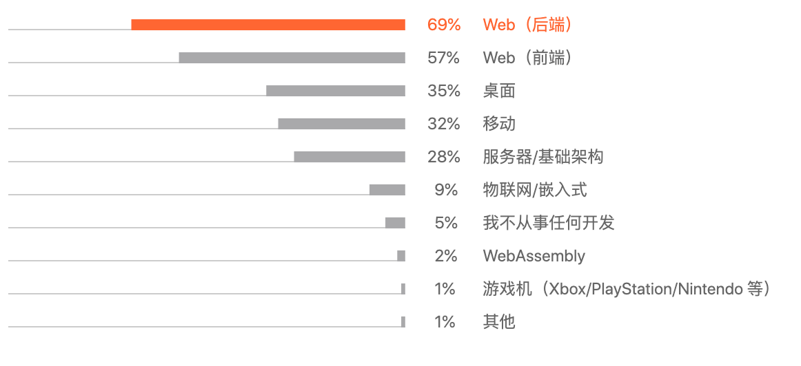 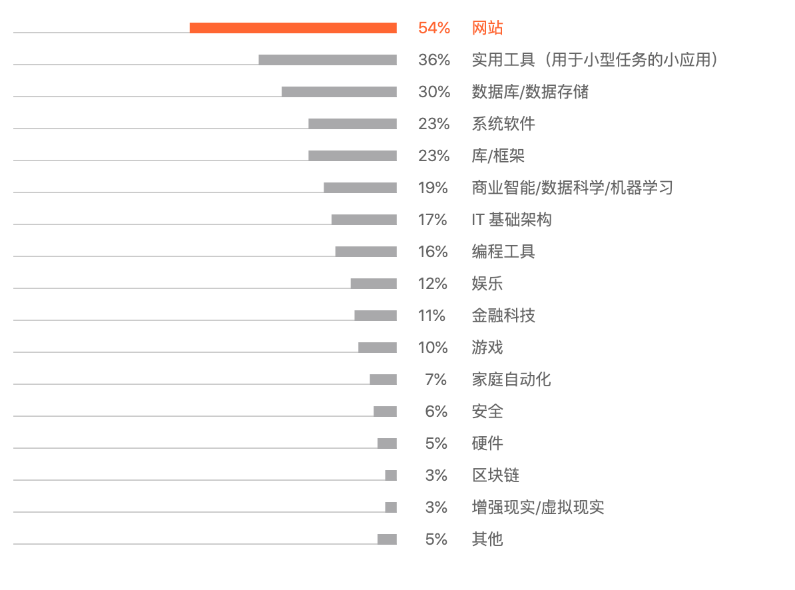大部分的开发者都是针对 Web 进行开发任务，而最常用于网站的开发。另外，工具、数据存储和框架的开发也是非常常见的开发内容。
获取信息的来源
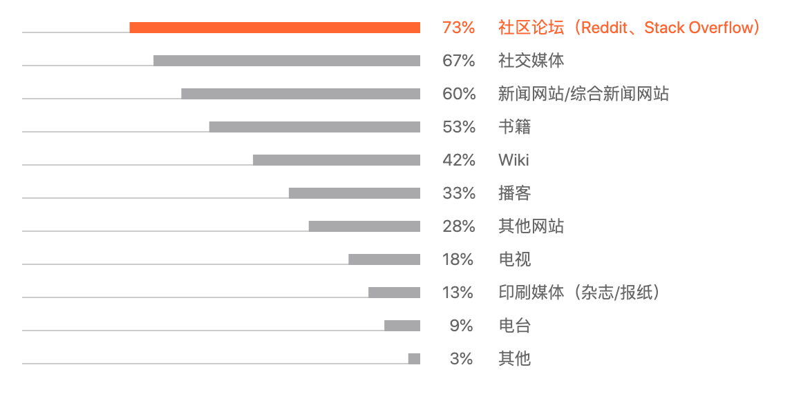开发者喜爱在 Stack Overflow 等社区论坛和社交媒体上获取信息。这是个非常有意思的调查结果。
敏捷软件开发框架
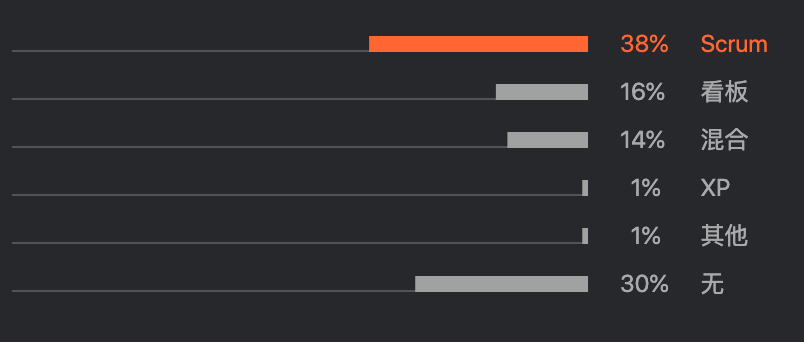大约 1/3 选择了 Scrum 进行敏捷开发，而也有不到 1/3 不使用任何敏捷开发。
Scrum 是迭代式增量软件开发过程，具体的流程如下图所示。

Java 主题
Java 版本
如我们所料，Java 8 是最受欢迎的，而最为另一个长期支持版本 Java 11 的热度排在第二位，目前 Java 14 已已经亮相，而且 Spring Boot 也是支持最新的 Java 14。因此这三个版本也是目前最推荐大家使用的三个 Java 大版本了。

下图是最新的 Oracle Java 版本的支持情况，大家可以随时去网站了解最新的版本支持情况。

应用程序服务器
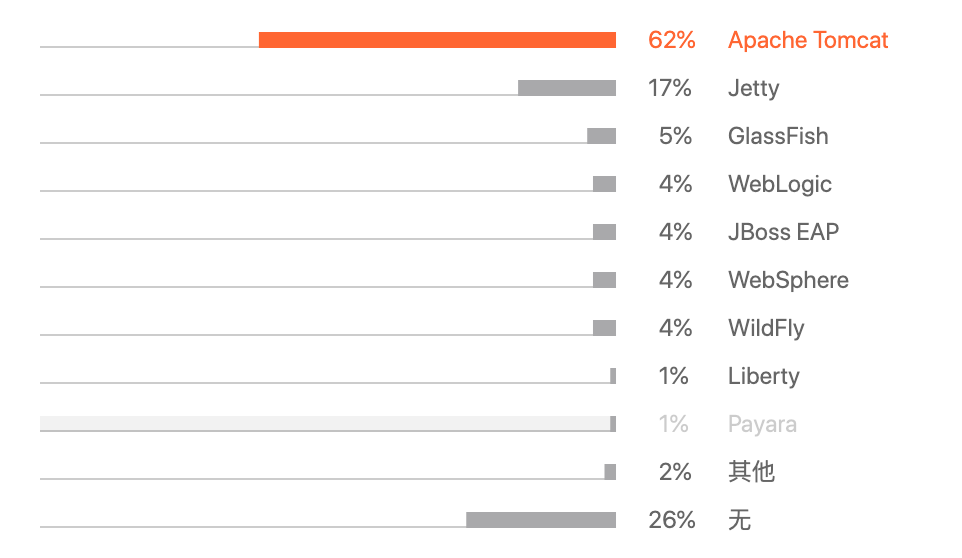毫无悬念，Tomcat 是最受欢迎的应用程序服务器，领先优势非常巨大。
Web 框架

IDE
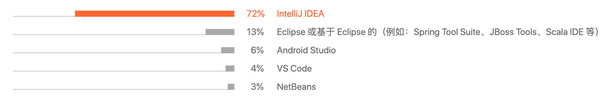对于 Java IDE 的选择，其实也没有什么大的争议了。Intellij IDEA 是目前最好的 Java IDEA，即时付费也是非常值得的。
JavaScript 主题
框架
前端 UI 框架首选 React，而在服务端首选位 Express。

而在模块化打包方面，首选为 Webpack，而测试框架为 Jest。
样式表语言

数据库
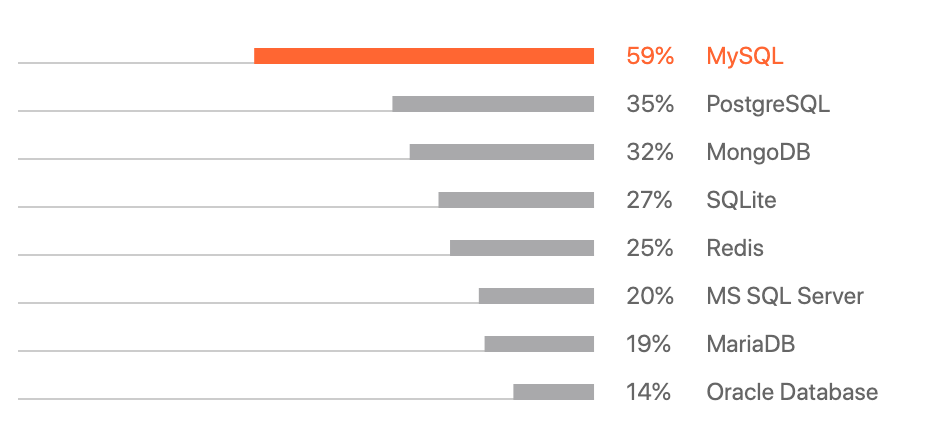对于数据库的选择，关系型数据库是最受关注，其主要有两大选择：MySQL 和 PostgreSQL。另外，文档型数据库 MongoDB 和内存型 KV 数据库 Redis 都是各自领域的领先者。
哈哈，开发者都是不怎么愿意去迁移到新数据库，其中的迁移过程是非常复杂的。
DevOps
配置管理工具
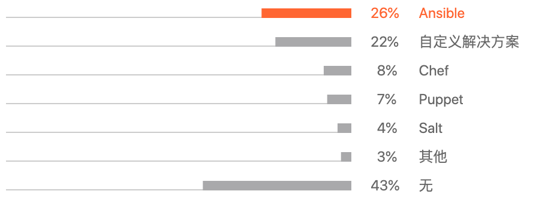这块还没有明显的巨头出现，日常我也是使用基于 Python 的 Ansible 为主。
基础结构配置工具
目前我还没怎么使用过 Terraform，有计划会去尝试下。工作中基本是使用 AWS CloudFormation 进行 AWS 的基础配置的。

容器编排
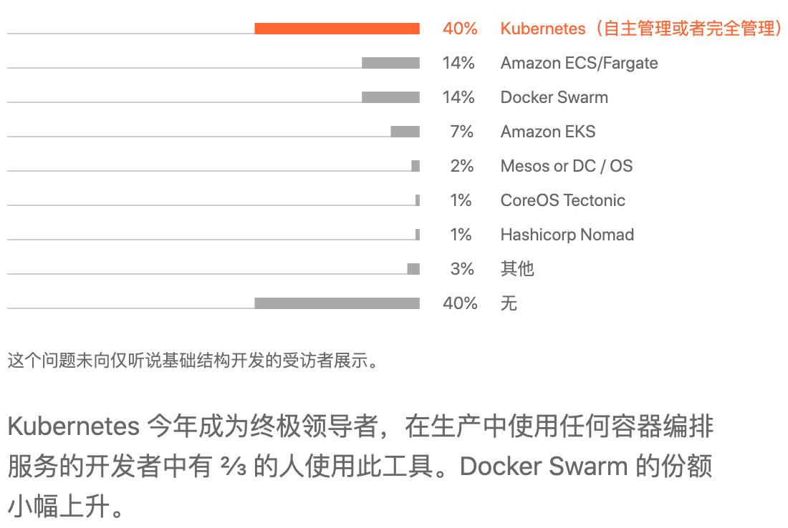云服务
这份调查是基于全球的，国内著名的阿里云和腾讯云可能只包含在其他里了。毫无疑问，这两者在国内是巨头的存在。

持续集成
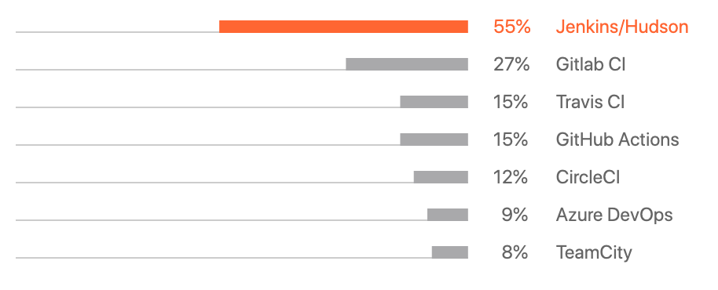对于公司来说 Jenkins 是最常用的持续集成工具，而对于开源软件来说，开始使用 GitHub Actions 会是一个很不错的选择。
问题跟踪系统
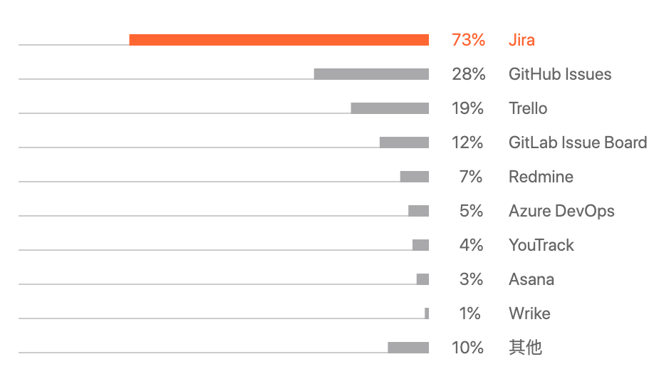付费的可以选择 Jira 作为第一选择，开源的话可以选择 GitLab 或者 Redmine。
微服务
分布式通信方式
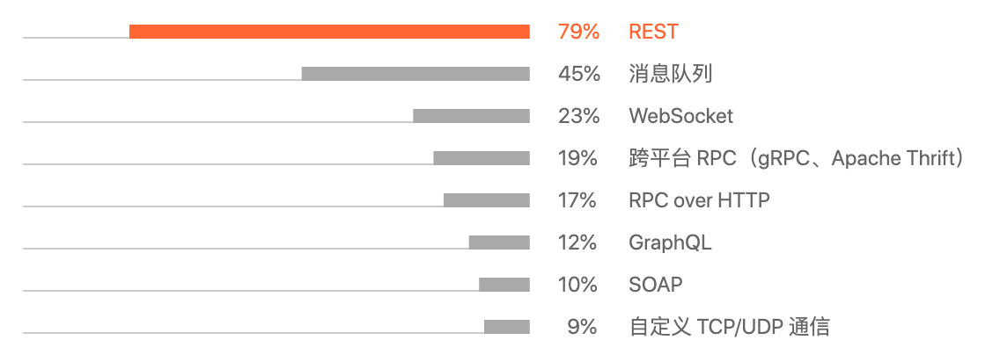根据调查 REST 是最受欢迎的方式，这可能跟 Spring Cloud 的流行有很大的关系。
API 规范
在跨部分、跨团队的开发过程中，好的 API 规范是非常重要的。

测试
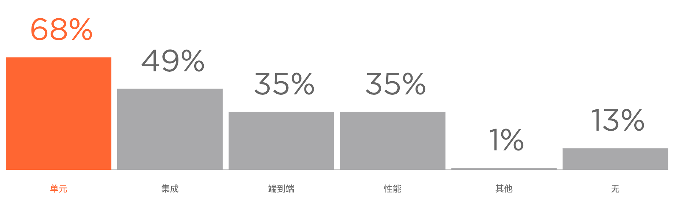测试类型
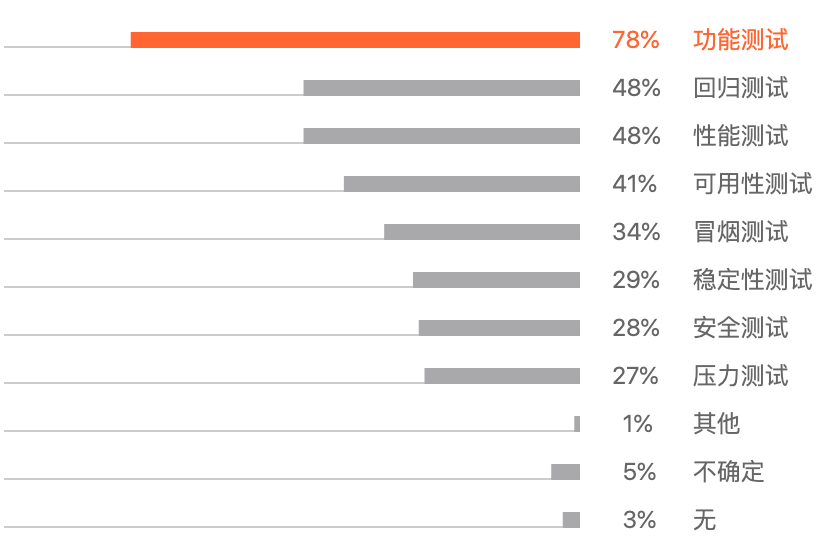测试框架与工具

附录
想要查看具体详细的调查分析报告，通过下面的网址进行查阅。
2020 开发人员生态系统现状: https://www.jetbrains.com/zh-cn/lp/devecosystem-2020/
更多精彩内容请关注：